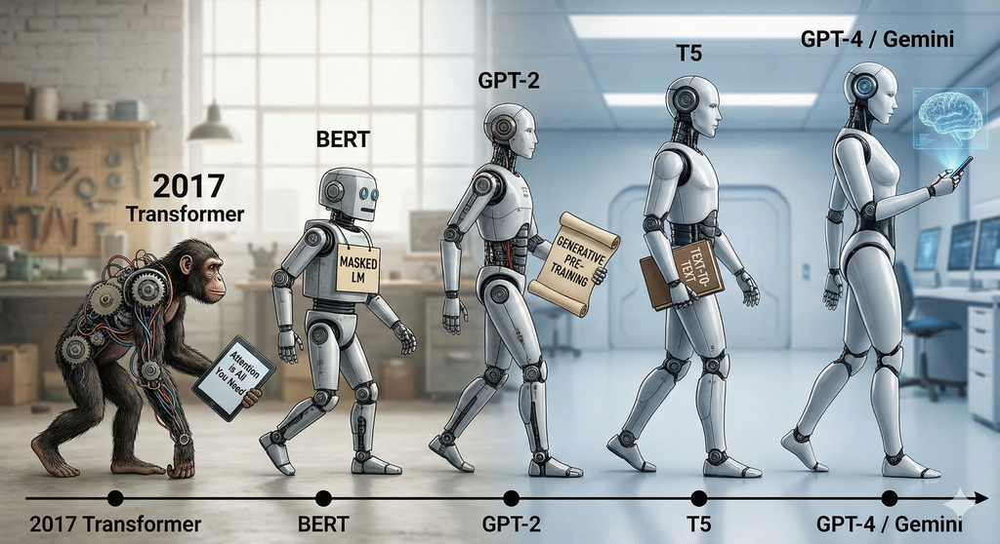
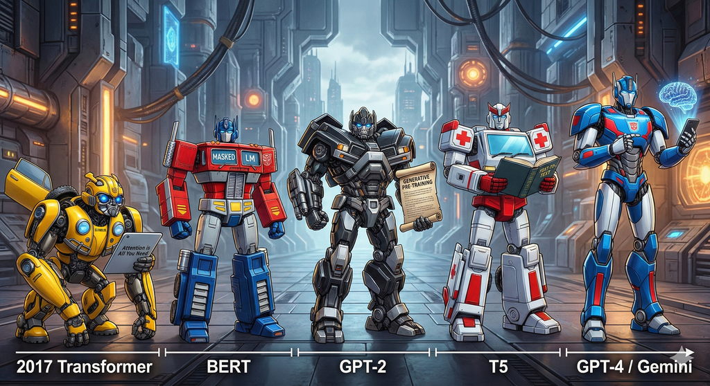

트랜스포머 싱귤래리티 (The Transformer Singularity)

어텐션의 탄생부타 2025년 멀티모달 에이전트와 추론 모델까지
제1부. 기원과 원리: 시퀀스 모델링의 패러다임 시프트 (Foundations)
제1장. 순차적 처리의 한계와 도전
- 1.1 RNN과 LSTM이 지배하던 시대
- 1.2 Seq2Seq 모델과 정보 병목(Information Bottleneck) 현상
- 1.3 어텐션(Attention)의 등장 - 보조 수단에서 핵심 메커니즘으로
제2장. 트랜스포머 아키텍처 해부 (Anatomy of Transformer)
- 2.1 Attention Is All You Need 논문이 바꾼 모든 것
- 2.2 인코더-디코더(Encoder-Decoder) 구조의 완벽한 이해
- 2.3 셀프 어텐션(Self-Attention)과 Q, K, V 연산의 기하학적 의미
- 2.4 멀티 헤드 어텐션(Multi-Head Attention) 다면적 문맥 학습
- 2.5 피드포워드 네트워크(FFN)와 잔차 연결(Residual Connection)
제2부. 언어 모델의 캄브리아기 폭발 (The LLM Explosion)
제3장. 인코더의 시대: 이해(Understanding)의 혁명
- 3.1 BERT 양방향 문맥 학습과 마스크드 언어 모델(MLM)
- 3.2 RoBERTa 하이퍼파라미터 최적화의 중요성
- 3.3 DeBERTa - Disentangled Attention과 상대적 위치 정보의 결합
- 3.4 ELECTRA 판별자(Discriminator)를 활용한 효율적 학습
제4장. 디코더의 시대: 생성(Generation)과 스케일링 법칙
- 4.1 GPT 시리즈의 진화 - Zero-shot, One-shot, Few-shot
- 4.2 스케일링 법칙(Scaling Laws) 데이터와 파라미터의 상관관계
- 4.3 LLaMA와 오픈 소스 모델의 대두
제5장. 통합 아키텍처와 변형
제3부. 아키텍처의 최적화와 심화 (Optimization & Deep Dive)
제6장. 위치 인코딩의 진화 (Position Encoding)
- 6.1 절대적 위치 인코딩(APE)의 한계
- 6.2 RoPE (Rotary Positional Embedding) - 회전 변환을 통한 상대적 위치 학습
- 6.3 ALiBi (Attention with Linear Biases) 외삽(Extrapolation) 성능의 극대화
제7장. 학습 안정성과 정규화 (Normalization)
제8장. 연산 효율화: O(N2) 극복하기
- 8.1 FlashAttention-1 - IO 인지를 통한 정확한 어텐션의 가속
- 8.2 FlashAttention-2 - 병렬성 최적화와 작업 분할의 재설계
- 8.3 FlashAttention-3
- 8.4 Ring Attention - 수백만 토큰 처리를 위한 분산 처리 기법
제4부. 확장의 기술: 효율성과 추론 (Scaling & Inference)
제9장. 전문가 혼합 모델 (Mixture of Experts, MoE)
- 9.1 희소 활성화(Sparse Activation)와 라우팅(Routing)의 원리
- 9.2 DeepSeek-V3 아키텍처 보조 손실 없는 로드 밸런싱 (Auxiliary-Loss-Free Load Balancing)
- 9.3 다중 토큰 예측(Multi-Token Prediction, MTP) 학습 전략
제10장. 추론 가속과 경량화
- 10.1 투기적 디코딩(Speculative Decoding) - 초안 모델과 검증 모델의 협업
- 10.2 양자화(Quantization) - FP8 학습과 추론의 시대
- 10.3 PEFT와 LoRA/QLoRA - 거대 모델의 효율적 미세 조정
제5부. 모달리티의 확장 (Beyond Text)
제11장. 비전 트랜스포머 (ViT)와 이미지 처리
- 11.1 ViT, 이미지를 토큰으로 처리하다
- 11.2 MAE (Masked Autoencoder) 픽셀 복원을 통한 표현 학습
- 11.3 DINOv2 자기지도 학습과 시각적 특징 추출
제12장. 오디오와 시계열 데이터
- 12.1 Whisper 약지도 학습을 통한 음성 인식의 일반화
- 12.2 AudioLM - 오디오의 의미적 토큰화와 생성
- 12.3 PatchTST와 iTransformer - 시계열 데이터의 패치화 및 역발상 구조
제6부. 2025 최신 트렌드: 하이브리드와 에이전트 (Frontiers)
제13장. 네이티브 멀티모달과 융합 (Native Multimodal)
- 13.1 연결(Glue Layers)에서 통합(Native Fusion)으로 - Gemini와 GPT-4o
- 13.2 이미지, 오디오, 텍스트의 단일 토큰 공간 처리
- 13.3 BLIP-2와 Q-Former 질의 기반 시각 정보 추출
제14장. 구조적 혁신: 트랜스포머를 넘어서 (Beyond Transformer)
- 14.1 SSM(State Space Models)과 Mamba 아키텍처의 부상
- 14.2 Jamba 트랜스포머와 Mamba의 하이브리드 아키텍처
- 14.3 선형 어텐션(Linear Attention)과 무한 문맥의 가능성
제15장. 추론(Reasoning) 모델과 강화학습
- 15.1 DeepSeek-R1 - SFT 없는 강화학습(RL)과 사고의 사슬(CoT) 창발
- 15.2 성찰 토큰(Reflection Tokens)과 Self-RAG
- 15.3 DPO, KTO 인간 선호 정렬(Alignment)의 최신 기법
제16장. 에이전틱 AI (Agentic AI) 시대로
- 16.1 생성(Generative)에서 행동(Action)으로 - 2025 에이전트 트렌드
- 16.2 GraphRAG 지식 그래프를 활용한 글로벌 컨텍스트 이해
- 16.3 자율적 도구 사용과 계획(Planning) 능력을 갖춘 트랜스포머
